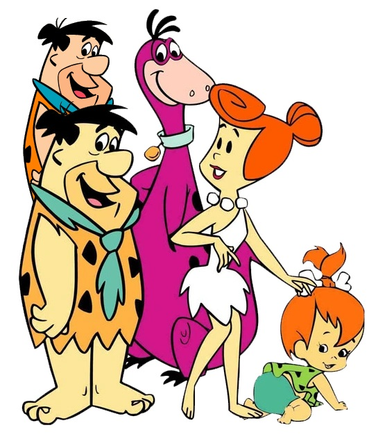
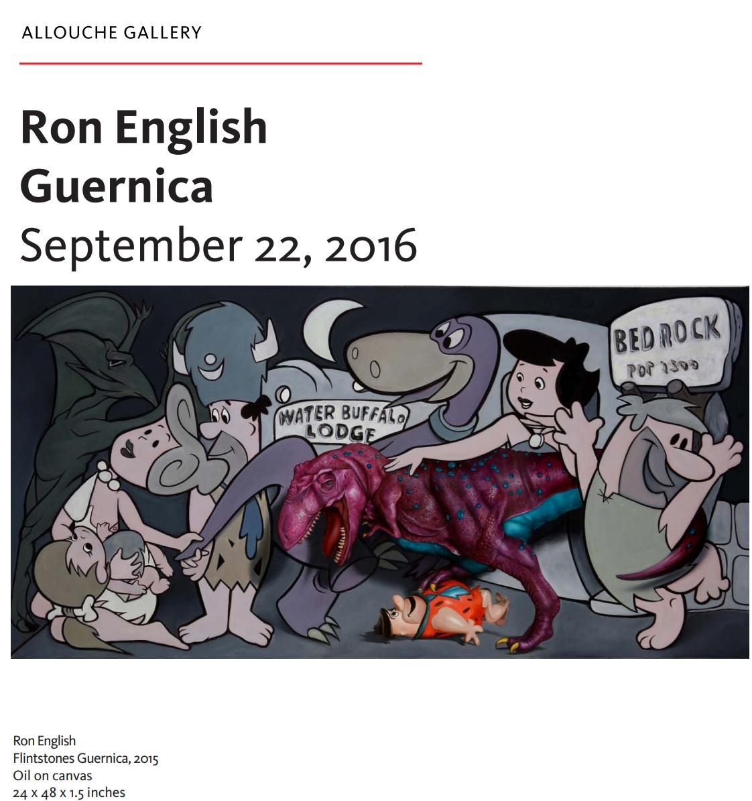
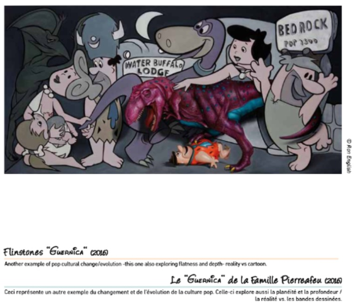
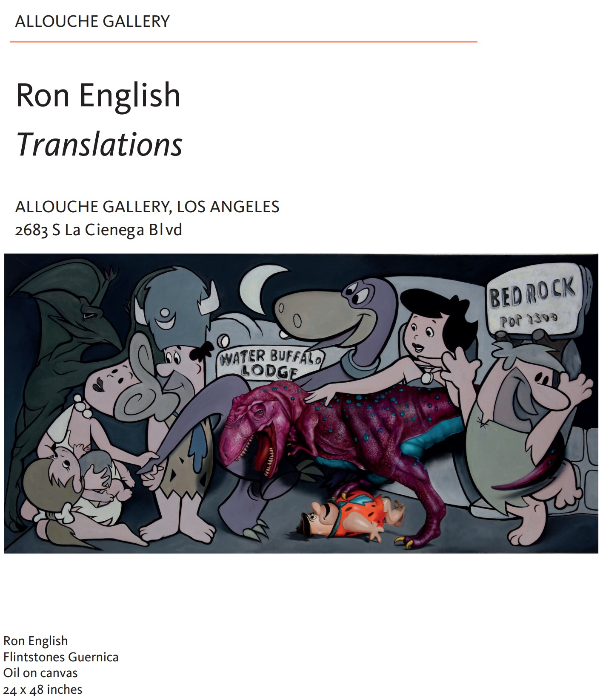
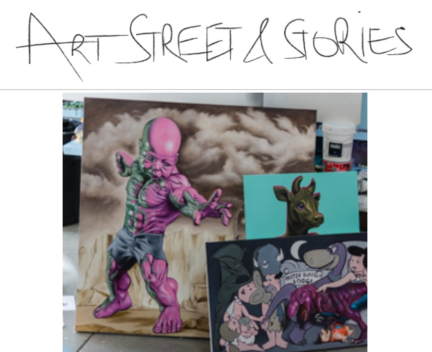

Exhibitions
Ron English / Guernica, Allouche Gallery, New York, New York, US, September 22–October 19, 2016.
Reimagining “Guernica†/ La réinvention du “Guernicaâ€, Museo de la Paz de Gernika, Gernika-Lumo, Bizkaia, Spain, April 4–December 10, 2017; the composition was presented as a print on stretched canvas, not as the original painting.
Translations, Allouche Gallery, Los Angeles, California, US, June 13–July 9, 2024.
Literature
Allouche Gallery, Ron English: Guernica (New York: Allouche Gallery, 2016), exhibition catalogue PDF, available here, accessed April 5, 2026.
Museo de la Paz de Gernika, Reimagining “Guernica†/ La réinvention du “Guernica†(Gernika-Lumo: Museo de la Paz de Gernika, 2017), digital exhibition catalogue / flip-book, available here, accessed April 5, 2026.
Allouche Gallery, Ron English: Translations (Los Angeles: Allouche Gallery, 2024), exhibition catalogue PDF, available here, accessed April 4, 2026.
Ron English, Original Grin: The Art of Ron English (Paris: Cernunnos, 2019), p. 214. ISBN 978-2374950938.
Notes
This work references Pablo Picasso’s Guernica.
The composition also references The Flintstones.
Ancillary Documentation






Selected Online Circulation
Selected sources documenting the work’s exhibition context and wider online circulation.